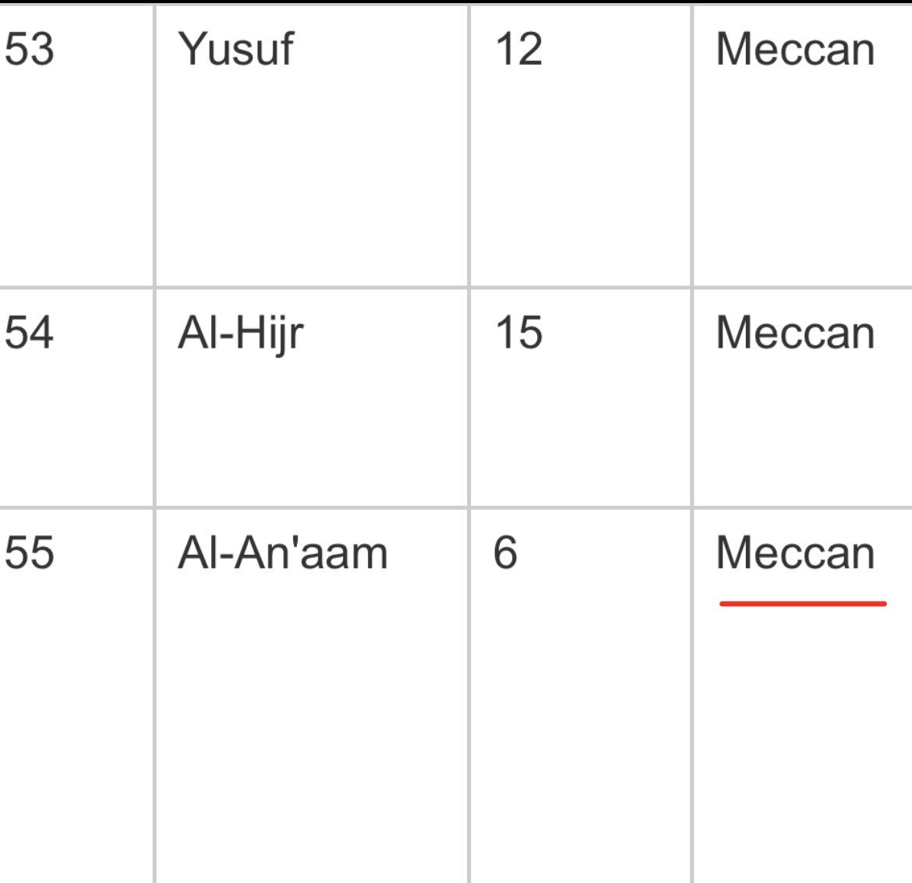
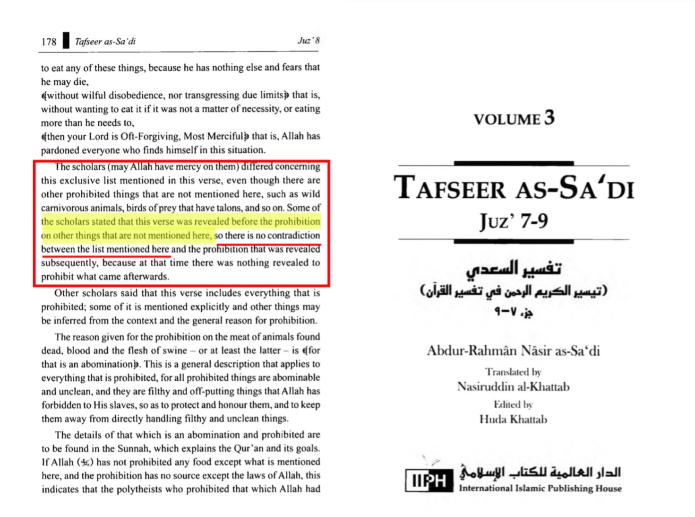
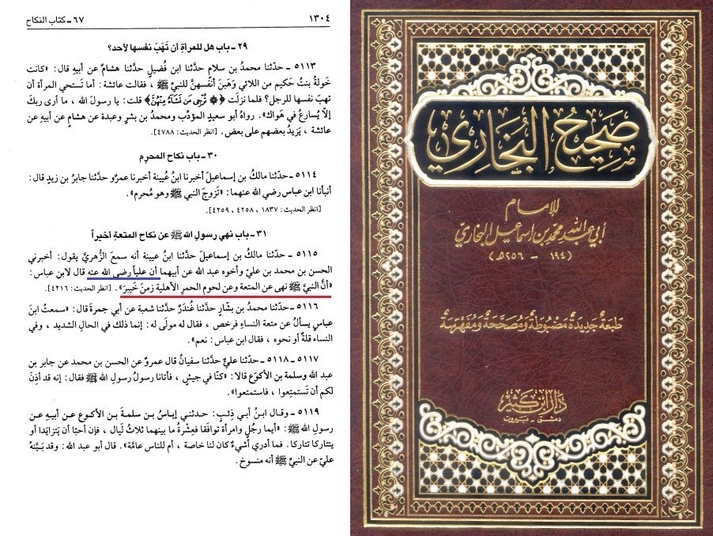
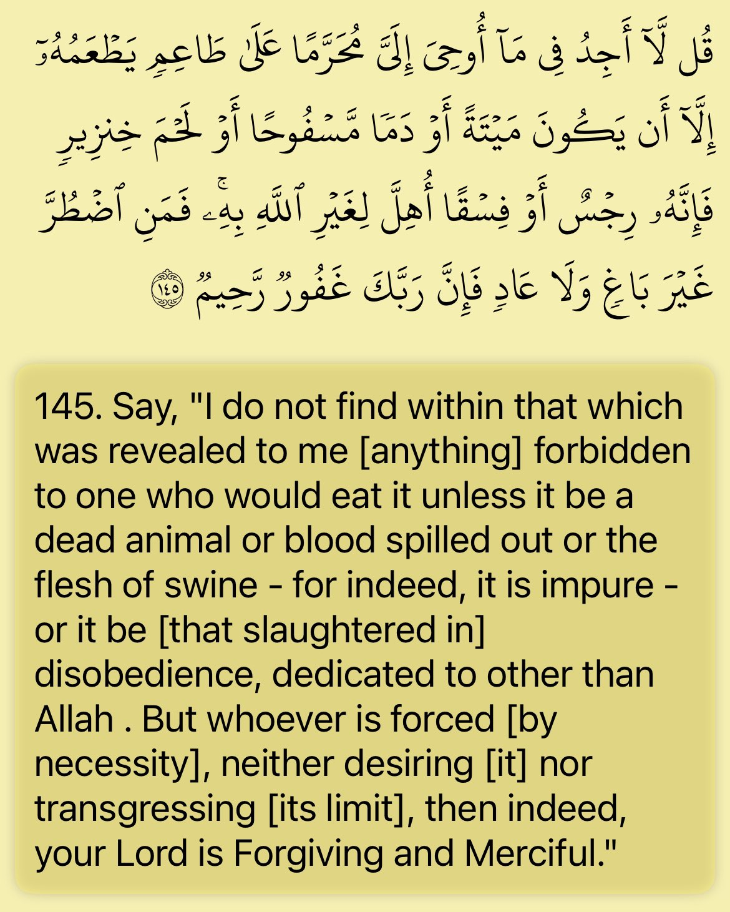

https://www.call-to-monotheism.com/rebuttal_to_sam_shamoun_s_article__which_came_first__an_analysis_of_the_conflicting_reports_on_muhammad_s_first_revelations_s
https://www.call-to-monotheism.com/refuting_shamoun_on__contradictions__in_the_saheeh_hadeeths
Refuting the alleged donkey meat contradiction
Submitters/quranist claim that the Hadiths are false because Hadiths mentions how the donkey meat is forbiden while the Quran only mentions 4 meats being forbidden.
—-
Let’s see if it really contradicts.
As for the verse regarding 4 items being forbidden this was revealed in Mecca so the prophet is saying this was the only food forbiden in the Wahy given to him and that was true at the time. Because regarding the donkey meat this was forbidden in Khaibar meaning this was in Medina And Khaibar happened at 7 hijra so that would mean this was forbidden at the end of the prophet life time in Medina.
So their is no contradiction because the Quran is speaking about a revelation that happened in Mecca and that was the only food forbidden at the time, that God revealed while the hadith is speaking about another revelation that was revealed at the end of the prophet lifetime in Medina
So there is no contradiction because God just revealed his revelation at different stages and that was the only revelation they had at the time until God revealed other laws.
وَقَالَ ٱلَّذِینَ كَفَرُوا۟ لَوۡلَا نُزِّلَ عَلَیۡهِ ٱلۡقُرۡءَانُ جُمۡلَةࣰ وَ ٰحِدَةࣰۚ كَذَ ٰلِكَ لنثَبِّتَ بِهِۦ فُؤَادَكَۖ وَرَتَّلۡنَـٰهُ تَرتیلا﴿ ٣٢ ﴾
• Dr. Mustafa Khattab:
The disbelievers say, “If only the Quran had been sent down to him all at once!” We have sent it as such in stages so We may reassure your heart with it. And We have revealed it at a deliberate pace.
And here ibn abass tells us when the prophet received he revelation regarding the donkey meat. And he mentions this happened at the battle of Khaibar mean it was forbidden in Medina.
In conclusion:
this means Q.6:145 is just talking about what was forbiden to the Muslims in Mecca during this time. And the hadith regarding donkey meat. This was added to that list later on in Medina. Thus the Hadiths and Quran don’t contradict.



This is the verse in question
